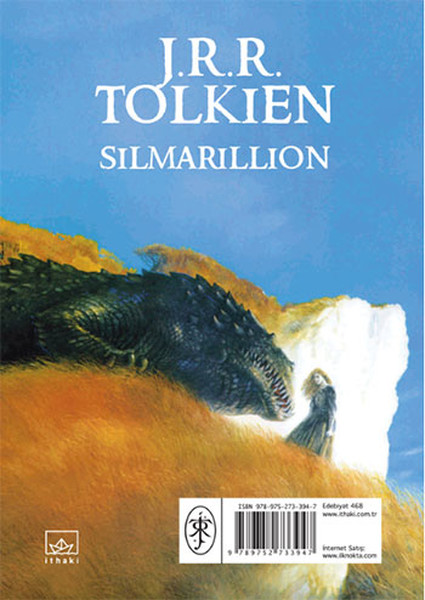

| Author | Year | Category | Buy It! |
|---|---|---|---|
| George Orwell | 1949 | Utopian Literature | Click me! |
|
In George Orwell's 1984, Winston Smith wrestles with oppression in Oceania, a place where the Party scrutinizes human actions with ever-watchful Big Brother. Defying a ban on individuality, Winston dares to express his thoughts in a diary and pursues a relationship with Julia. These criminal deeds bring Winston into the eye of the opposition, who then must reform the nonconformist. George Orwell's 1984 introduced the watchwords for life without freedom: BIG BROTHER IS WATCHING YOU.
|
|  | The Silmarillion, by J.R.R. Tolkien, tells the story of creation and war between good and evil. This companion to The Lord of the Rings begins with Ea, the world, and the Valar, who pave the way for the arrival of the children of Iluvatar. Together, they fight against Melkor, the force of evil in the world. This creation story both mirrors the story in Genesis in the Bible, and creates its own mythology.
|